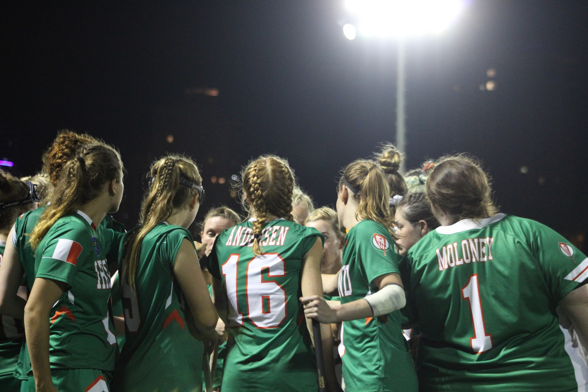
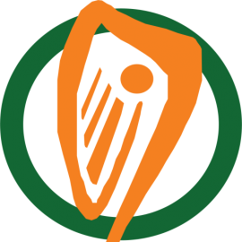
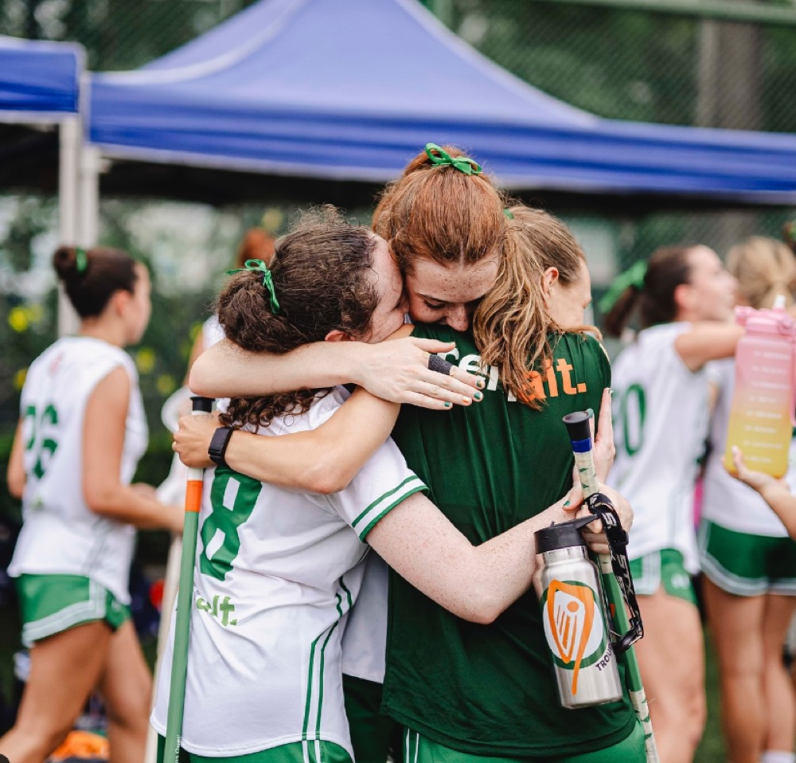

Ireland Lacrosse × a digital growth proposalA friendly outside look at what irelandlacrosse.ie already does well, where it's quietly leaking opportunity, and how a few focused upgrades could grow both participation and revenue — without touching what already works.
You gave up a World Games spot so the Haudenosaunee could play. Your U20 men are European champions. Your women just played the World Games. The credibility is there.
The website just hasn't caught up to the team. Here's how we'd close that gap.
This isn't a teardown. The foundation your team built is genuinely strong — and worth keeping.
Nothing here is broken. These are the gaps between a good 2015-era site and what the game needs in 2026.

Your site should make a stranger feel this in five seconds — then give them a way to play, follow, or give.
Current vs. what could be — grounded in what's actually on the site today. Most are small; a few are bigger. All keep JustGo exactly where it is.
You're already hiring to raise funds. The website should be that hire's best tool — not a brochure. Six levers, in rough order of return:
Tens of millions of people claim Irish heritage — and you already run a US 501(c)(3), so American gifts are tax-deductible. A prominent recurring + one-off "Support Irish Lacrosse" is the single biggest untapped lever you have.
Illustrative: 1,000 diaspora supporters at €10/month ≈ €120k/yearYou've said you want more people wearing the jersey. A print-on-demand shop means zero inventory and zero risk — fans buy, a partner prints and ships, you keep the margin. Identity and revenue in one.
Illustrative: 400 jerseys/year at ~€25 margin ≈ €10k/year, no stock heldGive your new fundraiser a page to sell: tiered sponsor packages, logo placement, sponsored match content, and clear reach numbers. Right now a sponsor has nothing to look at.
On-site paid registration and ticketing for camps, clinics and the Heritage Cup — instead of email back-and-forth. Every event becomes a clean, countable revenue line.
JustGo stays as your system of record — we just build a far clearer "Become a Member" path into it. Every extra percentage point of conversion is recurring dues you're currently leaving on the table.
The social tags, an embedded feed and a newsletter signup turn one-off visitors into an owned audience — which is exactly what makes every sponsorship and appeal above worth more next year.
On the numbers: the figures above are illustrative — arithmetic to show the shape of each lever, not forecasts. Real projections need your actual traffic, membership and diaspora data, which we'd model together before anyone commits to anything.
Keep the governance, keep JustGo, keep the people. Add the handful of things that turn a good site into a growth engine — for players, for fans, and for the funding that keeps Irish lacrosse climbing.
See the growth levers ↑